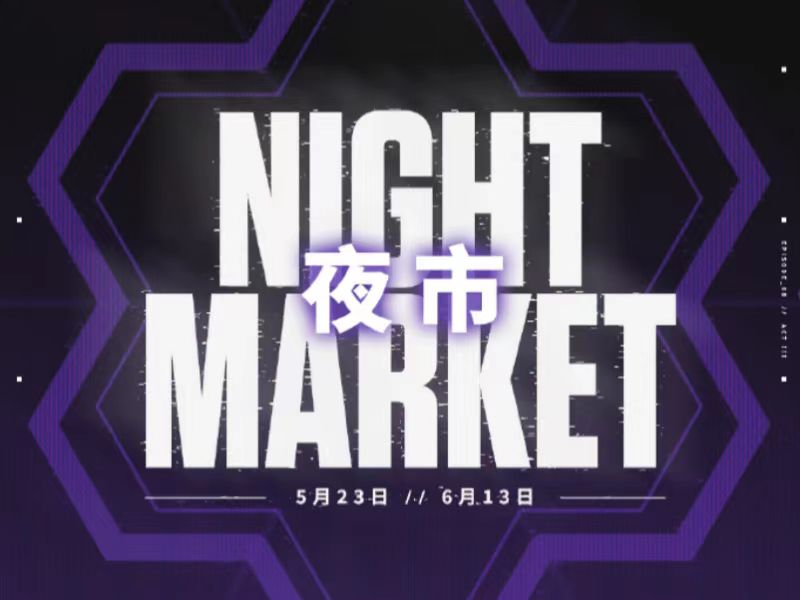

国服夜市重返，翻牌时间到！

此次夜市内的道具，将覆盖从7月12日(正式上线日)至24年2月28日(第8章第一幕结束日)期间首次推出的道具。相比第二次夜市又新加入【弃王遗思】 ，【漫画危机】，【耀鳞威龙 】等系列6款礼包内容。
如果大家还有对夜市规则还不甚清楚，那么看下面这一篇就对了，夜市玩法一次性了解!
1、什么是夜市?
夜市是游戏内不定时开放的折扣商店，它是除了常规商店和主打商店之外，另外一个玩家获取武器皮肤的方式。目前，这是在游戏中唯一能获取折扣皮肤的渠道。且每个人能够获得折扣的对应皮肤并不相同!
2、夜市在哪里?
夜市位于游戏大厅屏幕的右上角，标志是一个闪烁的卡片图标。你所需做的就是点击这个图标，然后依次翻开每张卡片，它会告知你哪些皮肤可以惊喜获取，以及对应的折扣百分比!
3、夜市的规则是什么?
每张牌对应一个武器皮肤，每个武器皮肤会有不同的折扣，最低五折!每位玩家既有翻开皮肤款式的惊喜、也有浮动折扣的惊喜!
至少有2个卓越或更高品质的皮肤出现。
同一把武器的皮肤不会出现超过两个(除非可以获得的皮肤不足六个)。
已经拥有的皮肤不会出现在夜市之中。
4、夜市中有哪些武器?
夜市的售卖范围与海外其他地区版本一致，包含类型、首次售卖时间和等级三个因素：
●类型范围：
○仅有枪械武器皮肤和近战武器皮肤会出现在夜市之中;
○战斗通行证和英雄契约中的武器皮肤不会进入夜市。
●时间维度：
○夜市将只售卖"包含当前赛幕在内的两幕"之前的内容。例如，如果开放日期为2月2日，且当前是第8章第一幕，那么当前赛幕及第7章第三幕的道具将不在夜市销售范围内。因此，本次夜市将包含从7月12日(正式上线日)至24年1月10日(第7章第三幕结束日)期间首次推出的道具。
●等级范围：
○枪械皮肤会覆盖精选、豪华、卓越三个不同品质等级的皮肤。
○由于所有近战武器皮肤均为传奇等级，但近战武器将跟随所属礼包等级设定。例如，”紫阙金琅 礼包”为卓越等级，虽然金琅斧为传奇等级，但是会依据所属礼包的等级出现在夜市。
○超品质的近战武器不会出现在夜市之中，如：魄月玄兔礼包中的魄月玄刃，盖世英雄礼包中的定海神珍。
●特殊道具：
○所有在上架时标注为限定的道具都不会在夜市中出现，如”离火刃“、“2023全球冠军赛”、《双城之战》等。